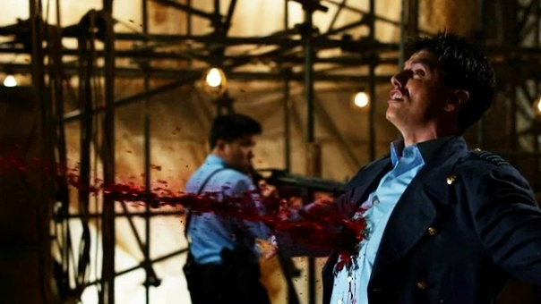

Эра Одиннадцатого Доктора
<<< НАЗАД ||| 10. Линия крови |||
или
ДАЛЬШЕ >>> к анимационному мини-сериалу по спин-оффу "Торчвуд"
ДАЛЬШЕ >>> к спин-офф сериалу "Приключения Сары Джейн"
ДАЛЬШЕ >>> к сериалу "Доктор Кто"
MVO [Sony Sci-Fi], MVO [ТВ-3], MVO [BaibaKo], MVO [Ю.Ай.Си.Медиа], DVO [Ред Медиа]
или Original [ENG]
Субтитры: Русские и Английские
 | Весь 4-й сезон (10 серий) |
The Blood Line
Дата выхода: 9 сентября 2011
Формат: 50-минутный эпизод
| Варианты озвучек: | * Разные: смотрите по инструкции |
|---|---|
| Скачивание и просмотр: |


Дата выхода: 9 сентября 2011
Формат: 50-минутный эпизод
В один чудесный день, никто не умирает. И на следующий… И на следующий… И на следующий! По всему миру, ни один человек не может умереть. Люди продолжают стареть, получать смертельные травмы и ранения, но они никогда не умирают. Результат: сильный рост населения Земли в одночасье.
Команда Торчвуда разделяется, и отправляются в путешествие по миру, чтобы остановить Три Семьи. Смогут ли они обратить Чудо и спасти человечество от этого проклятия?